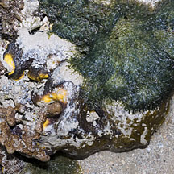
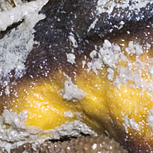
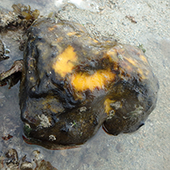
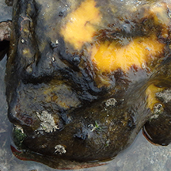

|
|
| sponges text index | photo index |
| Phylum Porifera |
| 'Century egg' sponge Aaptos suberitoides* Family Suberitidae updated Oct 2016 Where seen? This black often oval-shaped sponge is bright yellow on the inside, reminding us of the 'Centure egg'. It is sometimes seen on our Southern shores. It is probably often overlooked. Features: Oval or spherical, 10-15cm in diameter. Often partially buried in the sand. Surface lumpy, looks smooth but is rough to the touch. Holes tiny on low humps. Colour where exposed to sunlight is yellow-black, it is bright yellow on the inside. |
 Terumbu Pempang Tengah, Apr 12  |
 Terumbu Pempang Laut, Jun 15  |
|
*Species are difficult to positively identify without close examination.
On this website, they are grouped by external features for convenience of display.
| 'Century egg' sponges on Singapore shores |
| Photos of 'Century egg' sponges for free download from wildsingapore flickr |
| Distribution in Singapore on this wildsingapore flickr map |
| Other sightings on Singapore shores |
Links
References
|